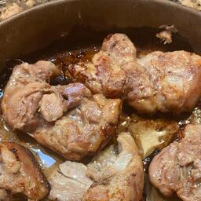

Baked Chicken
This was my first chicken recipe. It's easy, tasty, and lasts 4 days
in the fridge without losing flavor. Goes well with rice, pasta, veggies.
> Get dark chicken meat.
Dark meat is easier to use because it dries out less. So you can
overcook it 10 min and it's still great. I used boneless skinless thighs.
> Put it in stone baking dish.
Stone is easier to wash than metal, but anything works. But it's important
to use a deep dish, since it retains heat and moisture differently than
a flat one. I've never tried using flat.
> Pour Italian dressing over all pieces.
If you don't have any, use a mixture of water, oil, vinegar and salt.
> Flip and add more.
Use just enough to cover the bottom of the pan. Too little and it will
burn too quickly (you can mitigate with a cover, or by adding water).
Too much and the chicken will brown less on top, and will be more oily.
Remember that the chicken will release its own juices too.
> Bake at 400 uncovered
Check on it every 20 min. The water level will first rise, and then
boil and evaporate. If it goes out too quick it might burn. Cover it
up or add water in that case. But usually you wouldn't need to.
> Take it out when it looks browned
When I do 6 thighs in a dish that snugly fits them, I usually need an hour.